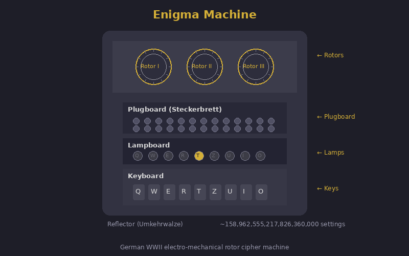
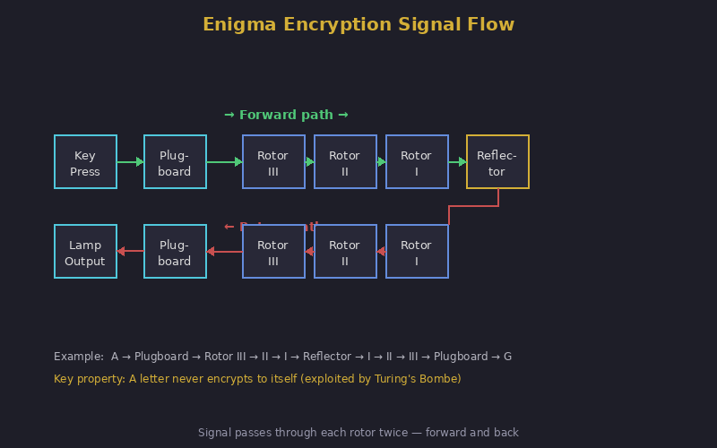

Enigma Machine
158 quintillion settings. Broken by a crossword puzzle and a weather forecast.
A faithful Wehrmacht Enigma I, in the browser. Choose three rotors, set the rings,
position the wheels, wire the plugboard, and type. The rotors step on every keypress
— including the famous middle-rotor double-step. Verified against the canonical test
vector AAAAA → BDZGO.
Symmetric by design. Enigma encrypts and decrypts with the same machine state. To decrypt, set the same rotors, rings, positions, and plugboard, then type the ciphertext. The original plaintext appears.
Why This Matters
Breaking Enigma is considered one of the decisive intelligence victories of WWII, shortening the war by an estimated two years and saving millions of lives. It also laid the foundations for modern computing.

Arthur Scherbius patented the Enigma machine in 1918 as a commercial product. The German military adopted it in 1926 and progressively enhanced it throughout WWII. At its peak, the naval Enigma M4 had 158,962,555,217,826,360,000 possible initial configurations — a number meant to put the cipher far beyond any conceivable brute force.
The Polish breakthrough. The story properly begins not at Bletchley but in Warsaw. In 1932 the young Polish mathematician Marian Rejewski, working for the Biuro Szyfrów with colleagues Jerzy Różycki and Henryk Zygalski, reconstructed the wiring of the German Army Enigma's rotors using only intercepted traffic and a handful of compromised documents passed by a French agent. Rejewski did this by formulating message-key permutations as group-theoretic equations and solving them — a feat the German cryptographic establishment had explicitly believed to be impossible. By 1938 the Poles were reading roughly three-quarters of intercepted German Enigma traffic, using their own electromechanical machines (the bomba kryptologiczna, the direct ancestor of Turing's bombe) and Zygalski's perforated sheets.
The handover. When Germany added two new rotors and changed procedures in late 1938, the Polish bureau's lead shrank. On 25 July 1939, five weeks before the German invasion, Rejewski and his colleagues met British and French cryptanalysts in a forest near Pyry, south of Warsaw, and presented them with everything: the rotor wirings, the bomby, the Zygalski sheets, working Enigma replicas. Without that meeting, Bletchley Park would have started from zero.
Hut 6 and Hut 8. At Bletchley Park, Hut 6 (under Gordon Welchman, then Stuart Milner-Barry) attacked German Army and Luftwaffe Enigma; Hut 8 (under Alan Turing, then Hugh Alexander) attacked Naval Enigma — a far harder problem due to rigorous procedures and, from February 1942, the four-rotor M4 used by the U-boat fleet. The breaks at Hut 8 were the difference between the Atlantic convoys getting through or being annihilated.
Turing's bombe and Welchman's diagonal board. Turing's bombe mechanised crib-based attacks: given a guessed plaintext fragment, it tested rotor settings electrically at the rate of thousands per second, exploiting the loops in the implied permutation graph. Welchman's diagonal board roughly tripled its efficiency by adding a constraint between scrambler banks. Over 200 bombes were built, operated by Wrens working in shifts day and night.
Strategic impact. Sir Harry Hinsley, the official historian of British intelligence in WWII, estimated that ULTRA — the codename covering decrypts from Enigma and other systems — shortened the war in Europe by at least two years and "possibly four." The figure is contested at the margins, but no serious historian disputes that the breaks were strategically decisive in the Battle of the Atlantic, the Mediterranean campaign, and the deception planning for D-Day.
Sources: Hinsley, “British Intelligence in the Second World War,” HMSO 1979–1990; Kozaczuk, “Enigma,” 1984; Welchman, “The Hut Six Story,” 1982; Hodges, “Alan Turing: The Enigma,” 1983.
Three-rotor Enigma (basic model): 1. Plugboard: swap 10 pairs of letters (150 trillion possible settings) 2. Three rotors: each rotates to next position after each keypress (17,576 rotor position combinations) 3. Reflector: sends signal back through rotors in reverse (this is Enigma's fatal flaw: a letter can never encrypt to itself) 4. Rotor selection: 3 from 5 rotors (60 rotor order combinations) Total: ~158 quintillion settings But: same letter never encrypts to itself → cribs work

Enigma's fatal flaw: a letter can never encrypt to itself (the reflector guarantees this). If you know (or guess) a plaintext word — called a crib — you can eliminate all configurations where any crib letter would encrypt to itself. Weather forecasts always began with WETTER. Messages often ended with HEIL HITLER. These cribs eliminated millions of possible settings. The Bombe machine tested the remaining configurations electromechanically at thousands per minute.
Operators sent lazy key indicators (AAA, BBB), repeated message keys, used predictable cribs (operator's girlfriend's name as daily setting), and sent stereotyped messages. These human failures, not mathematical weaknesses, gave Bletchley Park most of its entry points.
1 · Self-encryption rejection
Enigma's reflector means no letter can ever encrypt to itself. This single fact lets you eliminate most candidate alignments of a crib without testing rotor settings at all: if any letter of the crib lines up with the same letter in the ciphertext, that placement is impossible.
Each row is a candidate placement of the crib over the ciphertext. Rows in red are impossible (a crib letter would have to encrypt to itself). Rows in green survive and would be passed to the bombe for full testing.
2 · Brute-force rotor & position search
With the plugboard and ring settings fixed, the rotor order and starting positions form a search space of 60 × 17 576 ≈ 1 054 560 configurations. The bombe was needed because the plugboard explodes this by a further factor of ~1011. Without the plugboard, the search is small enough to run in your browser. Below: enter a ciphertext encrypted with rings AAA and no plugboard, give it a known crib, and watch the search recover the rotor settings.
The defaults reproduce the canonical "AAAAA → BDZGO" vector and its 25-letter extension. The search recovers I · II · III at positions AAA. Click "Load into machine" on any candidate to test it above.
Honest scope. A complete Turing-bombe-style attack — recovering rotor order, ring settings and plugboard from realistic ciphertext — adds a search factor of roughly 1011. That is exactly what the bombe was built for, and reproducing it in a single browser tab is beyond the budget of any general-audience exhibit. What you have here is the cryptanalytic core: the self-encryption rejection that filters cribs, and the rotor-position search that the bombe accelerated. Together they show how the impossible-looking 158-quintillion key space becomes tractable once the right structural weakness is exploited.
| Concept from Enigma Machine | Modern Evolution |
|---|---|
| Rotor substitution per keypress | AES: round keys change each round, creating a different transformation per step |
| Reflector = reciprocal (fatal flaw) | Modern ciphers are not reciprocal: encrypt ≠ decrypt in one direction |
| Physical key distribution (codebooks) | Public key cryptography: Diffie-Hellman solved key distribution mathematically |
| Operational errors broke it | Side-channel and operational security remain the weakest links today |
Plaintext: A T T A C K
Settings: Rotors I-II-III, Reflector B
Ring setting: 01-01-01 (AAA)
Plugboard: (A↔M) (T↔G)
Start position: A-A-Z
Encrypting the first letter "A":
1. Plugboard: A → M (A is swapped with M)
2. Rotor III: M → position 12 → maps to J
3. Rotor II: J → position 9 → maps to D
4. Rotor I: D → position 3 → maps to F
5. Reflector B: F → maps to S
6. Rotor I ← S → maps to S
7. Rotor II ← S → maps to E
8. Rotor III← E → maps to P
9. Plugboard: P → P (no swap for P)
Lamp "P" lights up.
Key behaviour: after each keypress,
Rotor III advances one position.
After 26 steps, Rotor II advances.
The wiring path changes every single keypress
— the same letter never encrypts the same way twice.The encryption side of Enigma is well-served on the internet. Several of these are excellent and worth your time. This exhibit's contribution is the cryptanalysis side — the crib-rejection rule and the rotor-position search above — which is harder to find done interactively for a general audience.
- Mike Pound · Computerphile The gold-standard video explanations of Enigma, the bombe, and crib attacks. If you watch one thing about how Enigma was broken, watch his series.
- cryptii.com — Enigma machine Clean in-browser Enigma with a chainable cipher pipeline. Excellent for experimenting with multi-stage encodings.
- Louise Dade's Enigma simulator A long-running, accurate simulator with a beautiful skeuomorphic interface that mimics a real machine. The closest you can get to operating the physical hardware in a browser.
- 101computing.net — Enigma emulator A polished classroom-oriented emulator with full configuration of rotors, rings, and plugboard.
- Bletchley Park The site itself, now a museum. Their online materials are tour-oriented rather than cryptanalysis-focused, but the institution remains the canonical source.
- Tony Sale's Codes and Ciphers Tony Sale (1931–2011) led the rebuild of Colossus at Bletchley. His site includes one of the few publicly accessible bombe simulators, though it is dense and aimed at serious students.
- Crypto Museum — Enigma section The reference for hardware, wirings, and operating procedures. The rotor wirings used in this exhibit's engine are cited from here.
- Lorenz Cipher — Hitler’s strategic teleprinter cipher, broken by Colossus
- One-Time Pad — The only provably unbreakable cipher
- Vigenère Cipher — The polyalphabetic ancestor of rotor machines
| Exhibit | 27 of 40 |
| Era | WWII · 1918–1945 |
| Security | Broken |
| Inventor | Arthur Scherbius (inventor) · German Armed Forces (operator) |
| Year | 1918 (patent) · 1926 (military adoption) |
| Key Type | Rotor wiring + plugboard settings |
| Broken By | Bombe machine · Crib attacks · Alan Turing · Bletchley Park |
Despite enormous Allied success, a small set of Enigma traffic remains unsolved today, largely due to missing metadata or truncated intercept context rather than fundamental Enigma strength. The "last few" are a reminder that intelligence work is as much about archived context as algorithms.
British planners concealed ULTRA's true source by attributing critical insights to a fictional high-level human spy codenamed Boniface. This deception protected the Enigma break by explaining "impossibly accurate" intelligence without revealing cryptanalytic capability.